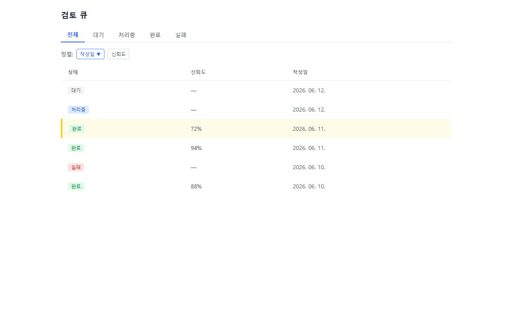
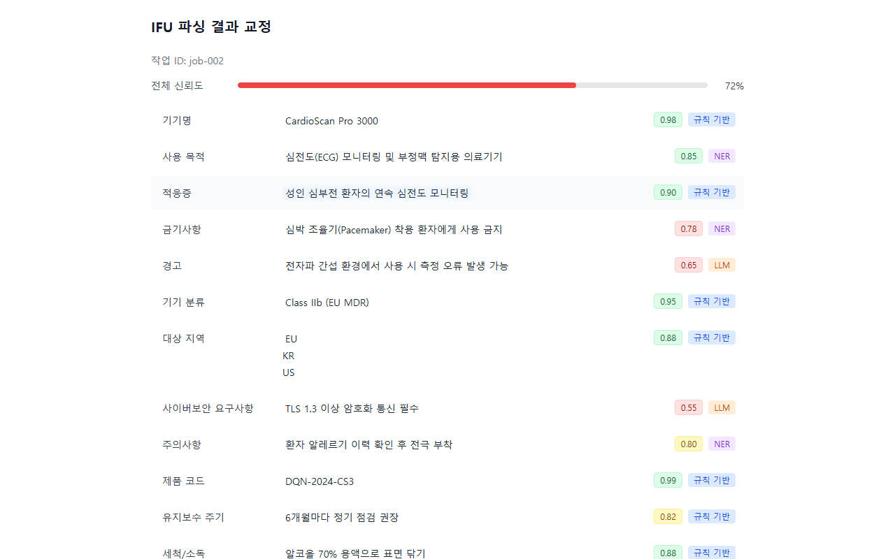
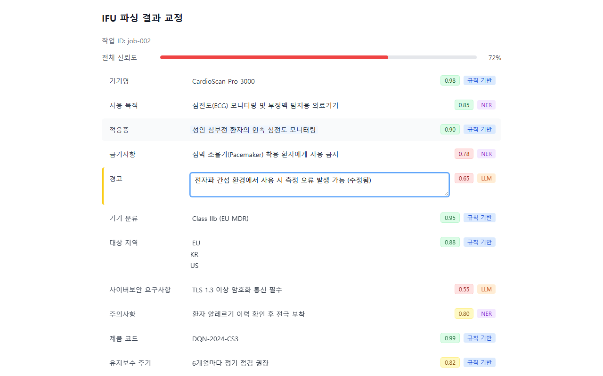

🏥 Hybrid AI RA Specialist
사용 설명서
의료기기 인허가(RA) 담당자를 위한 AI 보조 플랫폼입니다.
규제 문서 파싱, 요건 정합성 검토, 규제 정보 조회를 AI가 지원합니다.
1 이 시스템이란?
Hybrid AI RA Specialist는 의료기기 인허가(RA, Regulatory Affairs) 담당자가 복잡한 규제 문서 업무를 더 빠르고 정확하게 수행할 수 있도록 돕는 AI 보조 도구입니다.
IFU 문서 자동 파싱
사용 설명서(IFU)·위험관리 문서(RMS)·소프트웨어 요구사항(SRS) 등 Word/Excel 파일을 자동으로 읽어 핵심 항목을 추출합니다.
규제 정보 AI 조회
FDA, EU MDR, 식약처(MFDS) 등 최신 규제 지침을 자연어로 질문하면 근거 출처와 함께 답변합니다.
정합성 검사 (가드레일)
제출 전 문서의 요건 충족 여부를 자동으로 점검하고 누락 항목을 알려줍니다.
감사 이력 관리
누가 언제 어떤 내용을 변경했는지 모든 이력을 자동으로 기록합니다.
데이터 보안 (에어갭)
고객 내부 문서는 외부 서버로 전송되지 않습니다. 로컬 환경 안에서만 처리됩니다.
다국가 규제 지원
미국(FDA), 유럽(EU MDR), 한국(MFDS) 규제를 동시에 참조합니다.
2 시스템 구성도
이 시스템은 두 부분으로 구성됩니다. 클라우드(공개 규제 정보 관리)와 로컬 환경(내부 문서 처리)이 철저하게 분리되어 있습니다.
▲ 시스템 구성도 — 고객 문서는 로컬 환경에서만 처리됩니다.
3 처음 접속하기
시스템이 IT 담당자에 의해 설치·실행된 후, 아래 주소로 접속합니다.
웹 UI 접속
🌐 http://localhost:8080
원격 서버에 설치된 경우: IT 담당자가 알려준 서버 IP로 대체하세요.
예:
http://192.168.1.100:8080

화면 구성 요약
| 화면/주소 | 역할 | 접속 방법 |
|---|---|---|
/jobs | 검토 큐 — 파싱 작업 목록 전체 보기 | 메인 화면 |
/jobs/{작업ID} | IFU 파싱 결과 교정 — 개별 작업 상세 | 목록에서 행 클릭 |
localhost:8000/docs | API 문서 (개발자용) | IT 담당자/개발자 전용 |
4 검토 큐 (문서 목록)
검토 큐는 모든 문서 파싱 작업의 목록을 보여줍니다. 각 행은 하나의 파싱 작업(한 문서)을 나타냅니다.

화면 구성 요소
① 상태 탭
작업 상태로 목록을 필터링합니다.
| 탭 | 의미 | 다음 행동 |
|---|---|---|
| 전체 | 모든 작업 표시 | — |
| 대기 중 | 파싱 시작 전 | 잠시 기다리세요 |
| 처리 중 | AI가 현재 파싱하는 중 | 잠시 기다리세요 (보통 30초 이내) |
| 완료 | 파싱 성공. 교정 가능 | 행 클릭 → 교정 화면으로 이동 |
| 실패 | 파싱 중 오류 발생 | 오류 메시지 확인 후 재시도 또는 IT 문의 |
② 정렬 기준 선택
드롭다운에서 정렬 기준을 선택할 수 있습니다.
- 등록일 (최신순) — 가장 최근에 등록한 작업이 위에 표시됩니다.
- 신뢰도 (낮은 순) — AI 신뢰도가 낮은 항목(교정이 필요한 것)이 먼저 표시됩니다.
③ 목록 행
| 컬럼 | 설명 |
|---|---|
| 작업 ID | 고유 식별자 (UUID 형식) |
| 문서 ID | 연결된 문서의 식별자 |
| 상태 | 현재 처리 상태 (위 표 참조) |
| 신뢰도 | AI의 파싱 정확도 (높을수록 좋음, 75% 미만 시 교정 필요) |
| 교정 필요 | AI가 낮은 신뢰도 항목을 발견한 경우 표시 |
| 등록일 | 작업 생성 시각 |
④ 페이지 이동
화면 하단의 페이지 버튼으로 이전/다음 페이지를 이동합니다. 한 페이지에 최대 50건이 표시됩니다.
5 IFU 파싱 결과 교정
검토 큐에서 완료된 작업 행을 클릭하면 파싱 결과 교정 화면으로 이동합니다. AI가 추출한 각 항목을 검토하고 잘못된 내용을 수정할 수 있습니다.

화면 구성 요소
① 전체 신뢰도 바
화면 상단에 현재 작업 전체의 AI 신뢰도가 막대 형태로 표시됩니다. 교정을 통해 값을 확인하고 저장하면 신뢰도가 높아집니다.
② 항목별 행 (FieldRow)
AI가 추출한 IFU의 각 항목이 행으로 나열됩니다.
| UI 요소 | 의미 |
|---|---|
| 항목명 | 추출된 필드 이름 (예: 제품명, 사용 목적, 금기사항 등) |
| 추출값 | AI가 문서에서 읽어온 텍스트 |
| 신뢰도 뱃지 | 이 항목의 AI 신뢰도 (% 표시). 낮을수록 검토 필요 |
| 교정 필요 표시 | AI가 스스로 자신 없다고 판단한 경우 표시 |
| 편집 입력란 | 내용이 잘못된 경우 직접 수정 가능 |
③ 교정 방법 (단계별)

6 규제 정보 AI 조회 (RAG)
규제 정보 AI 조회 기능은 FDA, EU MDR, 식약처 등의 규제 문서에 대해 자연어로 질문하고 근거 출처와 함께 답변을 받는 기능입니다.
IT 담당자 또는 개발자에게 요청하거나, 아래 API 호출 방법을 참고하세요.
RAG 조회 API 사용법
터미널(명령 프롬프트)에서 아래 명령을 실행합니다.
# 규제 정보 질문 예시
curl -X POST http://localhost:8000/rag/query \
-H "Content-Type: application/json" \
-H "X-Tenant-ID: my-company" \
-H "Authorization: Bearer YOUR_TOKEN" \
-d '{
"question": "X-ray 의료기기의 FDA 510(k) 신청 시 사이버보안 요건은?",
"product_id": "xray-001",
"evidence_required": true,
"top_k": 5
}'응답 예시 해석
| 응답 필드 | 의미 |
|---|---|
| answer | AI가 생성한 답변 |
| sources | 근거가 된 규제 문서 목록 (출처 링크 포함) |
| confidence | AI의 답변 신뢰도 |
| citations | 답변에서 인용된 구체적 조항 |
7 감사 이력 확인
모든 문서 접근, 수정, 파싱 작업은 자동으로 감사 이력에 기록됩니다. 규제 감사(Regulatory Audit) 시 활용할 수 있는 변경 이력을 제공합니다.
감사 이력 조회 (API)
# 감사 이력 조회
curl http://localhost:8000/audit/events \
-H "X-Tenant-ID: my-company" \
-H "Authorization: Bearer YOUR_TOKEN"기록되는 정보
| 필드 | 내용 |
|---|---|
| 사용자 ID | 누가 수행했는지 |
| 작업 유형 | 파싱·교정·조회·삭제 등 |
| 대상 문서 | 어떤 문서에 대한 작업인지 |
| 변경 전 / 후 해시 | 내용이 변경된 경우 전후 해시값 |
| 타임스탬프 | 작업 수행 정확한 일시 |
8 업무 시나리오: 신규 문서 파싱하기
새로운 IFU(사용 설명서) 문서를 시스템에 업로드하고 파싱 결과를 받는 전체 흐름입니다.
단계별 상세 안내
1단계: 문서 업로드
지원 형식: .docx (Word), .xlsx (Excel)
# 문서 업로드 (IT 담당자 또는 개발자가 수행)
curl -X POST http://localhost:8000/documents \
-H "X-Tenant-ID: my-company" \
-H "Authorization: Bearer YOUR_TOKEN" \
-F "file=@IFU_xray_v1.0.docx" \
-F "doc_type=IFU" \
-F "product_id=xray-001"2단계: 파싱 작업 실행
# 파싱 시작 (문서 업로드 후 doc_id를 사용)
curl -X POST http://localhost:8000/parse/jobs \
-H "Content-Type: application/json" \
-H "X-Tenant-ID: my-company" \
-H "Authorization: Bearer YOUR_TOKEN" \
-d '{"doc_id": "DOC-001"}'3단계: 검토 큐에서 진행 상황 확인
웹 브라우저에서 http://localhost:8080/jobs에 접속합니다.
상태가 완료로 변경되면 행을 클릭해 교정 화면으로 이동합니다.
9 업무 시나리오: 파싱 결과 검토·교정
파싱이 완료된 문서를 검토하고 AI 오류를 수정하는 상세 흐름입니다.
- 전체 신뢰도 75% 미만인 경우, 신뢰도가 낮은 항목부터 먼저 확인하세요.
- 교정 필요(✓) 표시가 있는 항목을 중점적으로 검토하세요.
- 하나의 항목을 수정·저장하면 전체 신뢰도가 즉시 재계산됩니다.
10 업무 시나리오: 규제 요건 조회
특정 규제 요건을 AI에게 질문하고 답변을 문서 작업에 활용하는 흐름입니다.
좋은 질문 작성 요령
| 나쁜 예 | 좋은 예 | 이유 |
|---|---|---|
| FDA 규정 알려줘 | X-ray 의료기기 510(k) 제출 시 성능 시험 요건은? | 구체적인 기기 유형과 제출 유형을 명시 |
| MDR이 뭐야? | EU MDR Annex I 일반 안전·성능 요건 중 소프트웨어 관련 항목 목록은? | 구체적인 Annex와 원하는 정보 형식 명시 |
| 사이버보안 요건 | 한국 MFDS 소프트웨어 의료기기 허가 가이드라인의 사이버보안 요구사항은? | 국가와 가이드라인 출처 명시 |
11 시스템 설치 — IT 담당자용
시스템 요구사항
| 항목 | 최소 사양 | 권장 사양 |
|---|---|---|
| OS | Linux (Ubuntu 20.04+) / macOS / Windows 10+ | Ubuntu 22.04 LTS |
| RAM | 8GB | 16GB 이상 (Ollama 포함) |
| 저장소 | 20GB 여유 공간 | SSD 50GB 이상 |
| Docker | Docker 24.0+ | Docker Desktop 최신 |
| 인터넷 | 초기 설치 시 필요 | 에어갭 모드 시 불필요 |
설치 절차
git clone https://github.com/holee9/hybrid-ra-saas.git
cd hybrid-ra-saas/customer-runtimecp .env.example .env
# .env 파일을 열어 필요한 값 수정 (12절 참조)docker-compose up -ddocker-compose ps모든 서비스가 Up 또는 healthy 상태인지 확인합니다.
# 컨테이너 내에서 실행
docker-compose exec ollama ollama pull llama3.2:3b서비스 포트 목록
| 서비스 | 포트 | 역할 |
|---|---|---|
| 웹 UI | 8080 | RA 담당자 접속 화면 |
| API 서버 | 8000 | 백엔드 API (개발자용) |
| PostgreSQL | 5432 | 데이터베이스 (내부용) |
| MinIO UI | 9001 | 파일 저장소 관리 화면 |
| Ollama | 11434 | AI 모델 서버 (내부용) |
12 환경 변수 설정
.env 파일에서 아래 항목을 설정합니다.
| 변수명 | 기본값 | 설명 | 필수 |
|---|---|---|---|
DB_USER | ra_user | 데이터베이스 사용자명 | 권장 변경 |
DB_PASSWORD | change-me | 데이터베이스 비밀번호 | ⚠️ 필수 변경 |
DB_NAME | ra_db | 데이터베이스 이름 | 선택 |
MINIO_USER | minioadmin | 파일 저장소 관리자 ID | 권장 변경 |
MINIO_PASSWORD | change-me | 파일 저장소 비밀번호 | ⚠️ 필수 변경 |
JWT_SECRET | — | API 인증 비밀 키 (32자 이상 랜덤 문자열) | ⚠️ 필수 설정 |
CORS_ORIGINS | http://localhost:8080 | 웹 UI 접근 허용 주소 | IP 변경 시 수정 |
AIRGAP_MODE | false | 오프라인(에어갭) 모드 활성화 | 오프라인 시 true |
DB_PASSWORD,MINIO_PASSWORD는 기본값(change-me)을 반드시 변경하세요.JWT_SECRET는 최소 32자 이상의 랜덤 문자열을 사용하세요..env파일은 Git에 커밋하지 마세요 (이미.gitignore에 포함됨).
JWT_SECRET 생성 방법
# Linux/Mac
openssl rand -hex 32
# Windows PowerShell
[System.Convert]::ToBase64String([System.Security.Cryptography.RandomNumberGenerator]::GetBytes(32))13 에어갭 오프라인 모드
에어갭(Air-gap) 모드는 인터넷이 차단된 폐쇄망 환경에서 시스템을 운영하는 방법입니다. 외부 네트워크와 완전히 차단된 상태에서도 모든 핵심 기능이 동작합니다.
에어갭 모드 활성화
.env 파일에서:
AIRGAP_MODE=true# 지식팩 동기화 (인터넷 연결 환경에서)
curl -X POST http://localhost:8000/sync/pull \
-H "X-Tenant-ID: my-company" \
-H "Authorization: Bearer YOUR_TOKEN"docker-compose restart api에어갭 모드에서 가능한 기능
| 기능 | 에어갭 모드 | 비고 |
|---|---|---|
| IFU 문서 파싱 | ✅ 가능 | 로컬 처리 |
| 파싱 결과 교정 | ✅ 가능 | 로컬 처리 |
| RAG 규제 조회 | ✅ 가능 (캐시 기반) | 최신 규제 미반영 |
| 감사 이력 | ✅ 가능 | 로컬 저장 |
| 규제 지식팩 업데이트 | ❌ 불가 | 인터넷 연결 필요 |
14 트러블슈팅
일반 문제
| 증상 | 원인 | 해결 방법 |
|---|---|---|
| 브라우저에서 화면이 열리지 않음 | Docker 컨테이너 미실행 | docker-compose ps로 상태 확인 후 docker-compose up -d 실행 |
| 목록이 표시되지 않음 (빈 화면) | API 서버 미실행 또는 DB 연결 실패 | docker-compose logs api로 오류 확인 |
| 파싱 상태가 "처리 중"에서 변경 없음 | Ollama 모델 미설치 또는 메모리 부족 | Ollama 모델 다운로드 확인; 메모리 8GB 이상 확보 |
| 파싱 상태가 "실패" | 지원하지 않는 파일 형식 또는 파일 손상 | .docx 또는 .xlsx 형식인지 확인; 파일 재업로드 시도 |
| 저장 버튼 클릭 시 "인증 실패" | JWT 토큰 만료 | 토큰 갱신 후 재시도 |
| 교정 화면에서 편집 불가 | 작업이 "거부(Rejected)" 상태 | 빨간 배너 확인 → 문서 재업로드 또는 IT 문의 |
| RAG 응답이 30초 이상 걸림 | Ollama LLM 처리 부하 | 서버 메모리 확보; GPU 있는 경우 docker-compose.yml에서 GPU 활성화 |
로그 확인 방법
# 전체 서비스 로그
docker-compose logs -f
# API 서버만
docker-compose logs -f api
# 특정 시간 이후
docker-compose logs --since="2026-06-12T09:00:00" api시스템 재시작
# 전체 재시작
docker-compose restart
# 특정 서비스만
docker-compose restart api데이터 백업
# PostgreSQL 백업
docker-compose exec postgres pg_dump -U ra_user ra_db > backup_$(date +%Y%m%d).sql
# MinIO 파일 백업
docker cp customer-runtime_minio_data_1:/data ./minio-backupA 부록: API 레퍼런스 (개발자용)
공통 헤더
| 헤더 | 값 예시 | 설명 |
|---|---|---|
X-Tenant-ID | my-company | 테넌트(고객사) 식별자. 필수. |
Authorization | Bearer eyJ... | JWT 인증 토큰. 필수. |
Content-Type | application/json | JSON 요청 시 필수. |
주요 엔드포인트
| 메서드 | 경로 | 설명 |
|---|---|---|
GET | /health | 서버 헬스 체크 |
GET | /parse/jobs | 파싱 작업 목록 조회 (페이지네이션) |
GET | /parse/jobs/{job_id} | 특정 파싱 작업 상세 조회 |
PATCH | /parse/{job_id}/corrections | 파싱 결과 교정 저장 |
POST | /rag/query | 규제 정보 AI 조회 |
POST | /documents | 문서 업로드 |
POST | /guardrail/check | 규제 정합성 검사 |
GET | /audit/events | 감사 이력 조회 |
POST | /sync/pull | 클라우드 지식팩 동기화 |
응답 상태 코드
| 코드 | 의미 | 조치 |
|---|---|---|
| 200, 201 | 성공 | — |
| 400 | 잘못된 요청 (형식 오류) | 요청 데이터 확인 |
| 401 | 인증 실패 | 토큰 갱신 |
| 404 | 대상 없음 | ID 확인 |
| 422 | 유효성 검사 실패 | 입력값 확인 (오류 메시지 참조) |
| 429 | 요청 한도 초과 | 1분 후 재시도 (100 req/min 제한) |
| 500 | 서버 내부 오류 | 로그 확인 후 IT 문의 |